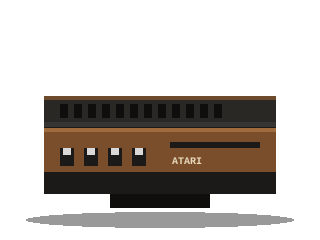

Salas 02 a 04
O acervo
Quinze peças iluminadas, uma por vez. Busque, filtre, guarde as suas favoritas e coloque duas máquinas lado a lado.

Vitrine vazia
Nenhuma peça combina com esses filtros. Que tal limpar a busca?
Quinze peças iluminadas, uma por vez. Busque, filtre, guarde as suas favoritas e coloque duas máquinas lado a lado.

Nenhuma peça combina com esses filtros. Que tal limpar a busca?